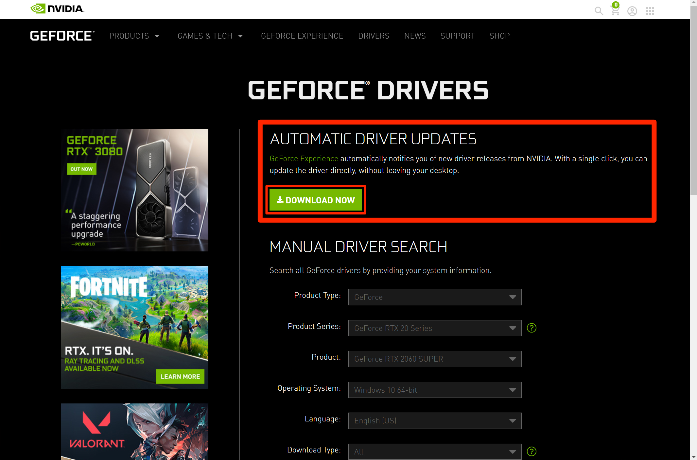
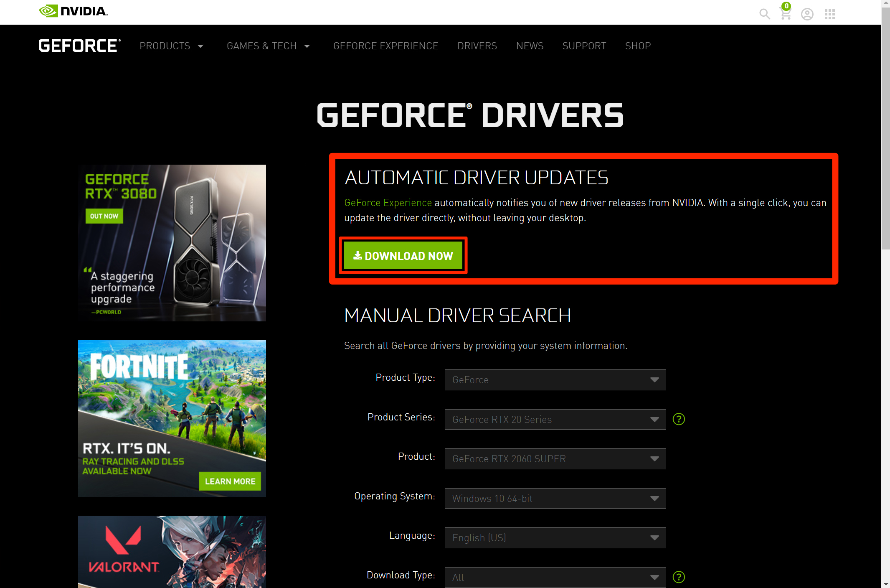

Congratulations! Your computer has been finally been built. While your computer is put together it is not quite operable yet.
Currently we can only access the bios which is not an operating system itself. We are going to need to obtain an OS either Linux or
Microsoft Windows. This guide will use Microsoft Windows as it is the most popular and more user friendly. You can obtain a disc at a
local store such as Target or Walmart if your computer has a disk drive otherwise you can obtain a windows installer from the windows page
and put it onto a flash drive. The code will have to be purchased in order to obtain the full version.
Simply put the flash drive or disk in and if your system does not automatically recognize windows the bios will recognize that there is a new
input and simply select that. The windows installer will pop up and simply follow the directions. This will take a bit from 30 minutes to an hour
then windows will be installed.
 

Unfortunately we are not quite at the end of the tutorial. Your computer is a working computer, but unfortunately it is not up to date. We are at the age
of the internet where updates for released products are continually being shoved out. Windows has an option to search for updates, but it is not perfect therefore
for each of your parts go to their home sites and find the most up to date update for each product. Install each of them for your RAM, motherboard, graphics card, and
operating system. After you have finished this then your computer is finally finally finished to do whatever you wanted to do with it.
Finally we have arrived at both building and creating a working computer. While many people are afraid of building a computer due to how expensive the parts
are it truly is not that difficult. You should know if you followed these steps accordingly. The process was simple, but the technology is so amazing that it
this site only scratched the surface explaining even how a computer functions. Either be gaming, creating programs, creating documents, surfing the web, a computer
has many different jobs that it can do simulataneously which is an amazing feat. You have taken your first step into understanding how a computer functions and hopefully
can better appreciate what a computer can do.